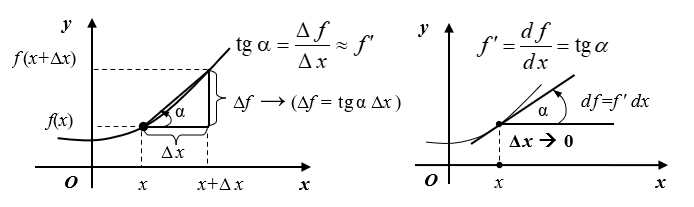

Тема заняття. Похідна функції. Диференціювання функцій.
У випадку зіткнення автомобіля з перешкодою ступінь тяжкості травм водія і пасажирів визначається величиною миттєвої швидкості в точці зіткнення. У математиці значення швидкості зміни шляху в конкретній точці визначається поняттям “похідна функції”.
Похідною функції y=f (x) за аргументом x (швидкістю зміни функцій f (x) ) називається границя відношення приросту Δf функції (у нашому прикладі – приросту пройденого шляху) до приросту Δx її аргументу (у прикладі – до приросту часу) за умови, коли Δ x \(\rightarrow\) 0:
Для похідної використовуються такі позначення:
Отже, еквівалентними є такі позначення:
Геометрично похідна являє собою кутовий коефіцієнт дотичної лінії до графіка функції y = f (x) у точці x, тобто y` = tg a, де a – кут нахилу дотичної лінії (див. рис. 1).

Рис. 1. Поняття похідної функції y = f(x)
Таблиця 1
Формули диференціювання елементарних функцій
Якщо функція y = f (U) має похідну на U, а функція U = U(x) має похідну на х, то похідна складної функції дорівнює:
\(y_x^\prime=f_u^\prime\cdot U_x^\prime\)
Таблиця 2
Основні правила диференціювання функцій
Приклади. Застосовуючи формули і правила диференціювання, знайти похідні таких функцій:
1) \(y=3x^4+2x^3-3x^2+5x-1\).
Розв’язання.
\(y^\prime=\left(3x^4\right)^\prime+\left(2x^3\right)^\prime-\left(3x^2\right)^\prime+\left(5x\right)^\prime-1^\prime=3\left(x^4\right)^\prime+2\left(x^3\right)^\prime-3\left(x^2\right)^\prime+5\left(x\right)^\prime-0=3\cdot4x^3+2\cdot3x^2-3\cdot2x+5=12x^3+6x^2-6x+5\)
2) \(y=x^2\cos x\).
Розв’язання.
\(y^\prime=\left(x^2cos x\right)^\prime=\left(x^2\right)^\prime cos x+x^2\left(cos x\right)^\prime=2xcos x-x^2sin x\)
3) \(y=(2x^3+4)^6\).
Розв’язання. Позначимо \(U=2x^3+4\), тоді y = U 6 і (див. табл. 2, п. 5)
\(y^\prime=6\cdot U^5\cdot(2x^3+4)^\prime=6(2x^3+4)^5\cdot6x^2,\) або \(y^\prime=6\cdot(2x^3+4)^5\cdot(2x^3+4)^\prime=6(2x^3+4)^5\cdot6x^2.\)
4) \(y=tg^2x\).
Розв’язання.
\(y^\prime=\left(\mathrm{t}\mathrm{g}^2x\right)^\prime=2\mathrm{tg}x\left(\mathrm{tg}x\right)^\prime=2\mathrm{tg}\cdot\frac{1}{{cos}^2{x}}=\frac{2\mathrm{tg}x}{{cos}^2{x}}\)
Якщо функція аргументу х задана параметричними рівняннями, то її похідна буде дорівнюватимє частці від ділення похідних кожної складової:
\(\left\{\begin{matrix}x=\phi(t)\\y=\psi(t)\\\end{matrix},\right.\rightarrow y_x^\prime=\frac{y_t^\prime}{x_t^\prime}=\frac{\psi^\prime(t)}{\phi^\prime(t)}\).
Приклади.
5) \(\left\{\begin{matrix}x=2{cos}{3}t\\y=4{sin}{3}t\\\end{matrix}\right.\)
Розв’язання.
\(x_t^\prime={\left(2{cos}{3}t\right)_t}^\prime=2{sin}{3}t\cdot{\left(3t\right)_t}^\prime=6{sin}{3}t;\)
\(y_t^\prime={\left(4{sin}{3}t\right)_t}^\prime=4{cos}{3}t\cdot{\left(3t\right)_t}^\prime=12{cos}{3}t.\)
\(y^\prime=\frac{12cos{3}t}{6sin{3}t}=2ctg3t\).
Нехай задана функція є степенево-показниковою \(y=\left(u\left(x\right)\right)^{v\left(x\right)}\) .
Щоб знайти похідну такої функції потрібно прологарифмувати дану функцію за основою е (тобто дописати злівої та правої сторони рівності натуральні логарифми): \(ln{y}={ln{\left(u\left(x\right)\right)}}^{v\left(x\right)}\).
Використовуючи властивості логарифмів отримаємо \(ln{y}=v\left(х\right)⋅ln\left(u\left(х\right)\right)\).
Оскільки \(ln{y}\) і \(ln\left(u\left(х\right)\right)\) — складні функції, то після диференціювання обох частин цієї рівності дістанемо: \(\frac{1}{y}\cdot y^\prime=v^\prime\cdot ln{u}+\frac{1}{u}\cdot u^\prime\cdot v\).
Звідси \(y^\prime=y\left(v^\prime {u}+\frac{u^\prime}{u}\cdot v\right)=u^v\left(v^\prime {u}+\frac{u^\prime}{u}\cdot v\right)\).
Таким чином, \(y^\prime=u^v\left(v^\prime {u}+\frac{u^\prime}{u}\right)\).
Приклади.
6) \(y=\left(2x-5\right)^{x+2}\).
Розв`язання. \(ln{y}={ln{\left(2x-5\right)}}^{x+2}\), \(ln{y}=\left(x+2\right)\cdot l n{\left(2x-5\right)},\)
\(\frac{1}{y}\cdot y^\prime=\left(x+2\right)^\prime {\left(2x-5\right)}+\left(x+2\right)\cdot\left(ln{\left(2x-5\right)}\right)^\prime\)
\(\frac{1}{y}\cdot y^\prime=ln{\left(2x-5\right)}+\left(x+2\right)\cdot\frac{1}{2x-5}\cdot2\),
\(y^\prime=y\cdot\left(ln{\left(2x-5\right)}+\frac{2x+4}{2x-5}\right)\),
\(y^\prime=\left(2x-5\right)^{x+2}\cdot\left(ln{\left(2x-5\right)}+\frac{2x+4}{2x-5}\right)\).